Embedded QA
Risk-based testing, Master Test Plan, test matrix, bug reports. ESP32, Wokwi, PlatformIO, UART CLI (JSON), I2C, Logic Analyzer + PulseView.
Embedded QA Engineer · IoT · DefTech · AI QA
Тестую IoT-пристрої та прошивки ESP32: від ризиків і тест-плану до автоматизації на Python/Pytest і bug reports з доказами. Поєдную QA з досвідом Tech Lead, COO та автоматизації процесів.
01 / Профіль
QA-інженер із фокусом на embedded та IoT: risk-based тестування прошивок, автоматизація на Python/Pytest, аналіз Serial-логів і обміну по UART, зрозумілі bug reports з evidence.
Маю 14+ років у digital: адміністрування сайтів, SEO та PPC, керування командою з 12 фахівців в AppFox, TeamLead розробки, COO та Tech Lead у Synergy Solution, автоматизація процесів у n8n. У 2026 році пройшов курс Prometheus EMB101 «Embedded QA в IoT та DefTech» і отримав сертифікат з відзнакою.
02 / Компетенції
Інструменти для тестування пристроїв, автоматизації та запуску проєктів.
Risk-based testing, Master Test Plan, test matrix, bug reports. ESP32, Wokwi, PlatformIO, UART CLI (JSON), I2C, Logic Analyzer + PulseView.
Python, Pytest, pyserial, parametrized tests, fixtures, JUnit XML. AI-асистоване тестування: GPT, Claude, Codex, DeepSeek.
ArduCopter, PicaSim, FPV збірка, ремонт і діагностика, Betaflight, ELRS, RadioMaster, калібрування.
Arduino, ESP32, Raspberry Pi, Orange Pi, STM32 / AVR, UART, GPIO, пайка THT / базова SMD, Li-Ion packs.
n8n, Telegram Bot API, Linux (Ubuntu, Debian, Armbian), Proxmox VE, Git, GitHub.
Tech Lead, COO, TeamLead, Agile, найм, ТЗ, SEO / PPC, Google Analytics, WordPress, Android (Kotlin).
03 / Кар’єра
QA та автоматизація, керування командами, вебпродукти.
AI QA та автоматизація тестування (GPT, Claude, Codex, DeepSeek), технічне лідерство, автоматизація процесів у n8n.
Власна підприємницька діяльність.
Операційне управління компанією після ребрендингу в Synergy Solution, автоматизація процесів у n8n.
Керування відділом розробки після ребрендингу ISoft Consulting у Syntrex, розробка сайтів на WordPress, автоматизація в n8n.
Розробка мобільних додатків для Android (Kotlin), аналітика мобільних додатків, контент-менеджмент та SEO.
Керування крос-функціональною командою з 12 фахівців (розробка, QA, дизайн, контент, SMM): найм, ТЗ, прийом робіт. SEO-стратегія, CRO, вебаналітика та звітність для керівництва.
Avada, PartsQ, Agency Seko, WebStart, Веб-технолоджи, Пром-Океан, LIKE DIGITAL, Reffer: технічні SEO-аудити, семантика, Google Ads, лінкбілдинг, міграція сайтів, керування командою просування.
Фестивалі «Аніма» та UkraїnkaFest: розробка й підтримка сайтів, контент, онлайн-платежі, підтримка клієнтів. Оптимізація процесів дала +80% продажів за рік.
04 / GitHub
Відкриті репозиторії з документацією, тестами та доказами.
Embedded QA · ESP32 · Pytest
Risk-based тестування IoT-вузла на ESP32 у Wokwi: Master Test Plan, 32 тести в матриці, 39 автотестів на Pytest через UART, аналіз I2C у PulseView. Знайдено 9 Critical і 14 Major дефектів, рішення — NO-GO.
Відкрити на GitHub ↗Orange Pi · Python · Offline AI
Повністю офлайн голосовий помічник українською на Orange Pi Zero 3: VAD → Vosk (STT) → команди / локальна LLM → Piper (TTS). Задокументована історія налагодження заліза.
Відкрити на GitHub ↗n8n · SEO · API · JavaScript
Три робочі автоматизації: відправка сторінок на пришвидшену індексацію через API, моніторинг sitemap.xml кожні 15 хв з відправкою лише нових і оновлених сторінок (порівняння lastmod, n8n Data Tables, сповіщення в Telegram) та збір позицій у Google через DataForSEO із записом у Google Sheets — на основі цього флоу зробили сервіс.
Відкрити на GitHub ↗05 / Сертифікати
Підтверджене навчання: QA, embedded, електроніка, дрони, Python, Linux та OSINT.
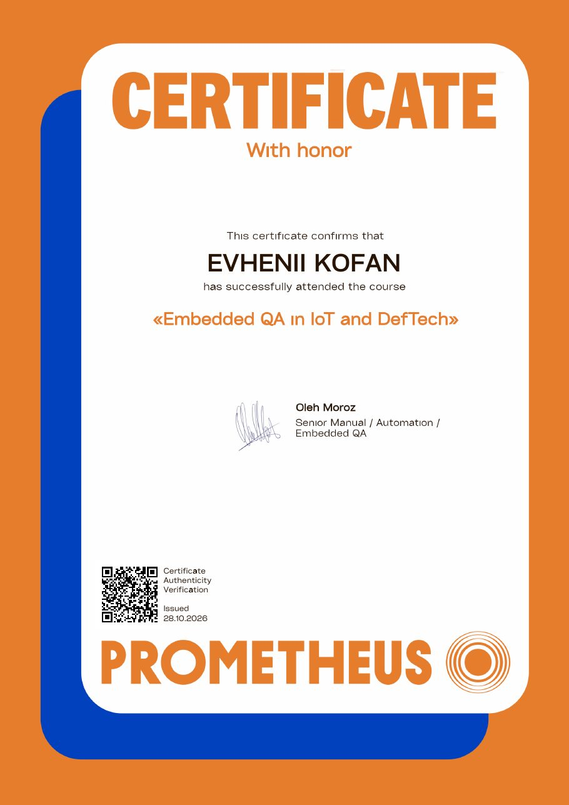
Prometheus · EMB101 · 28.10.2026
Сертифікат з відзнакою. Ментор — Олег Мороз, Senior Manual / Automation / Embedded QA. Тестування прошивок ESP32 у Wokwi, UART/I2C, recovery та NVS, Python/Pytest-автоматизація, мережеве тестування IoT, Master Test Plan і release decision.
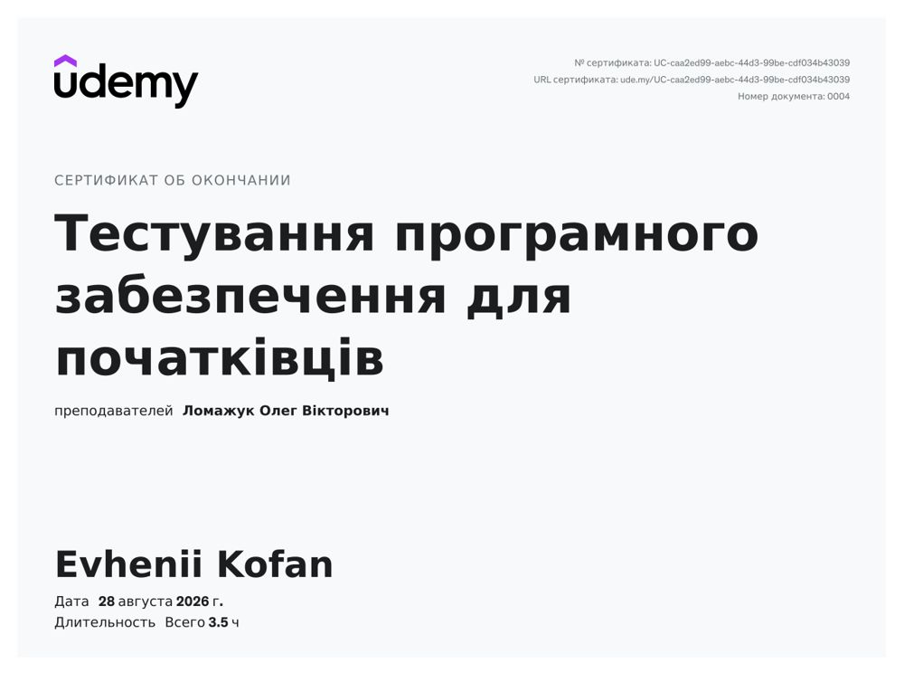
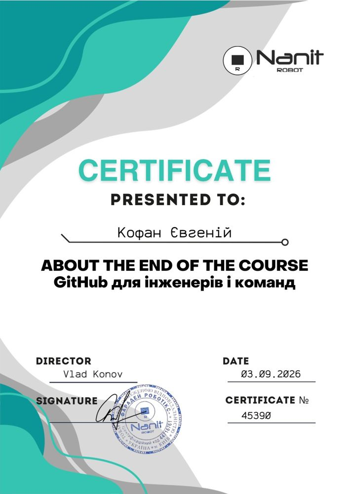
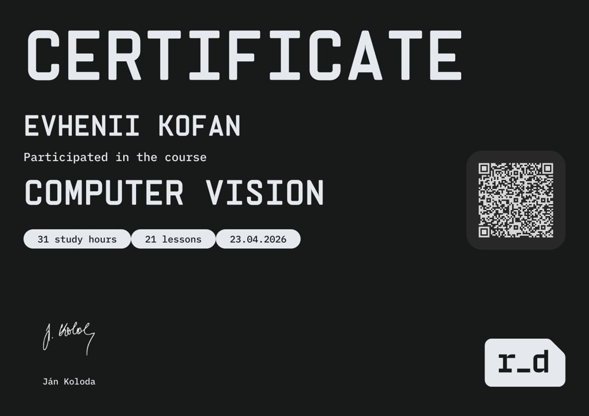
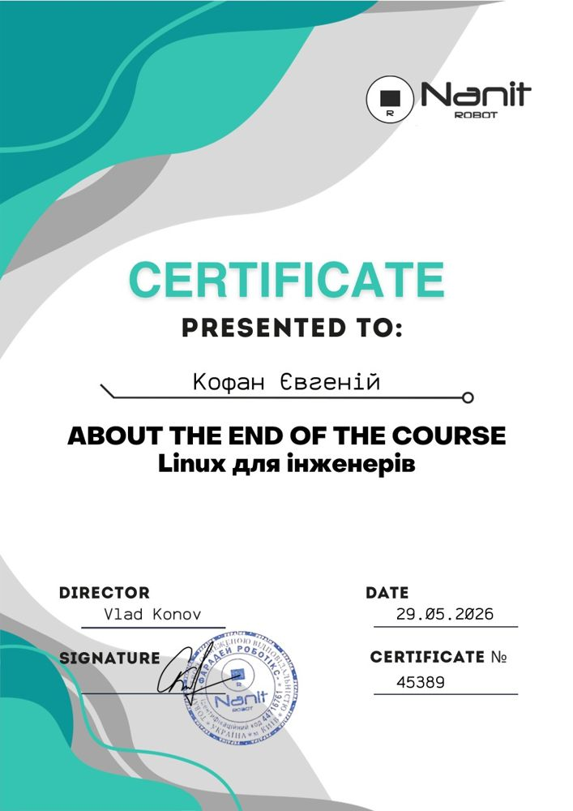
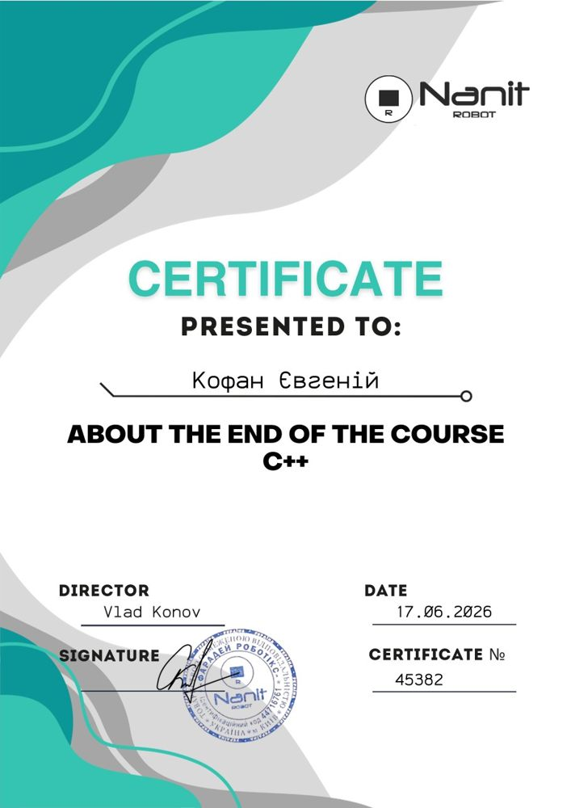
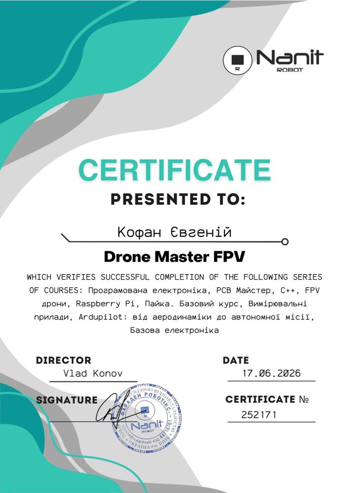
Аеродинаміка, керування дронами та літаками, робота з автопілотом і виконання реального польоту.
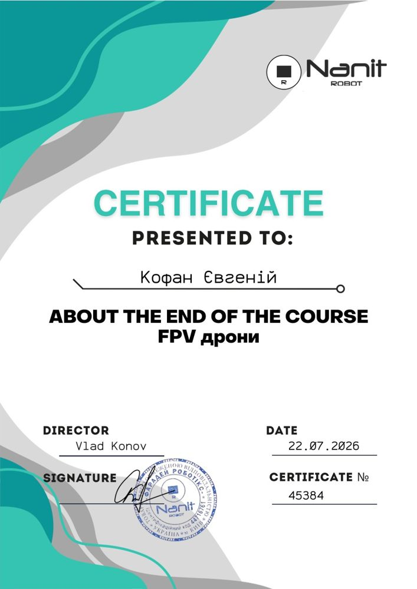
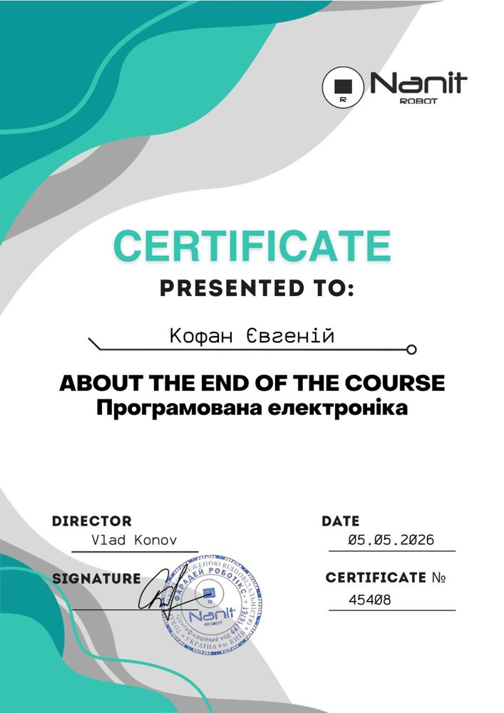
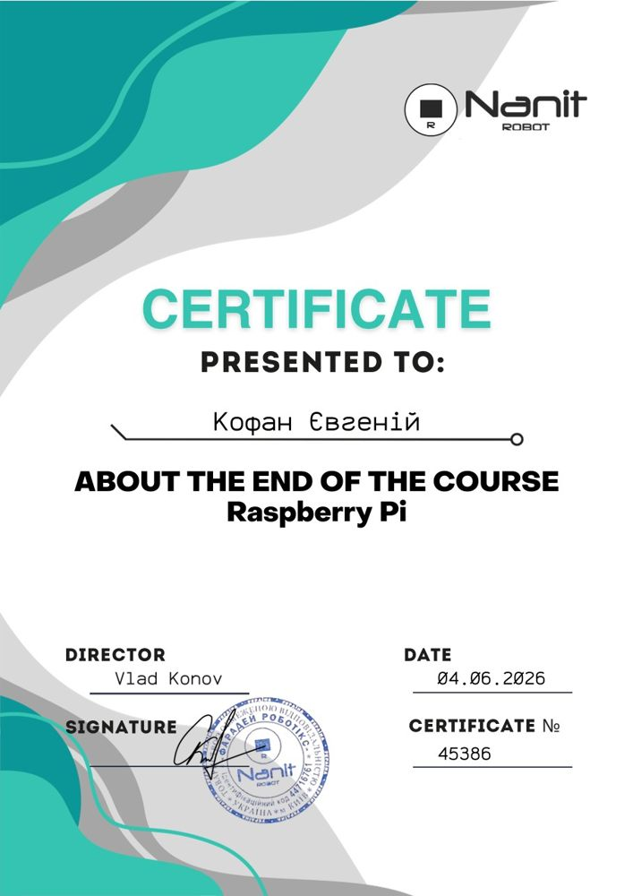
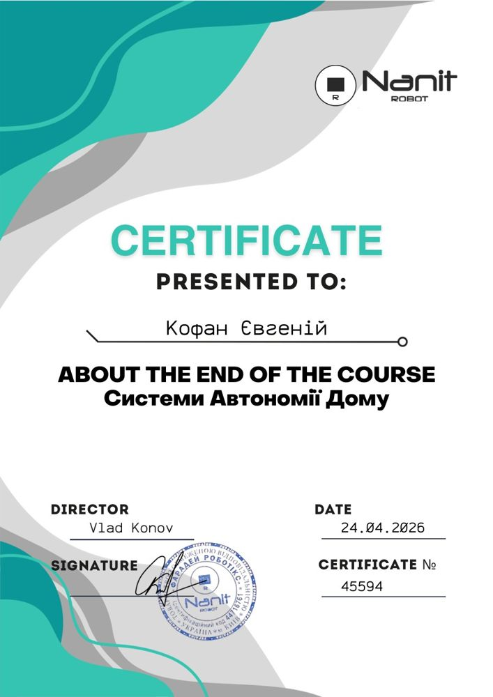
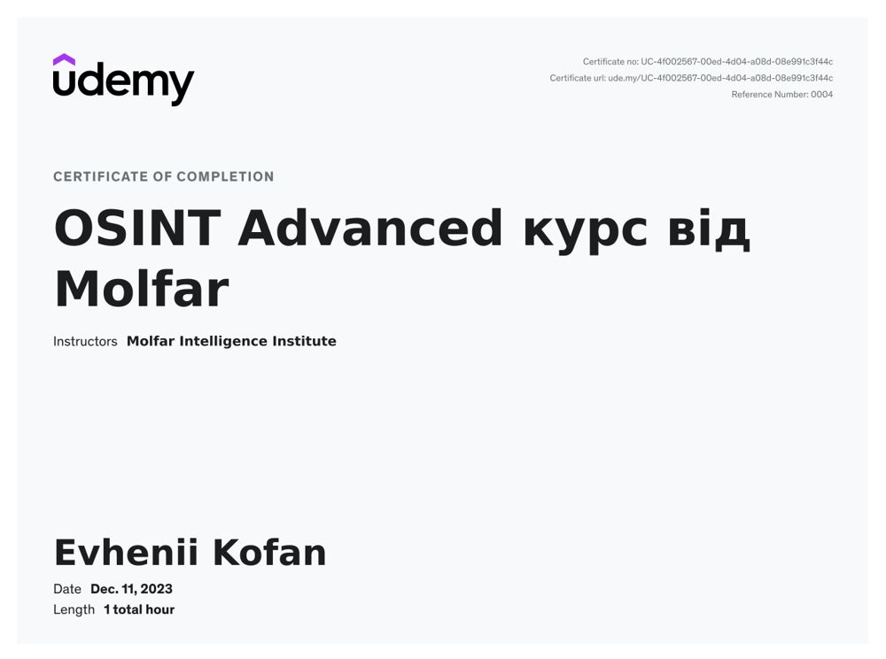
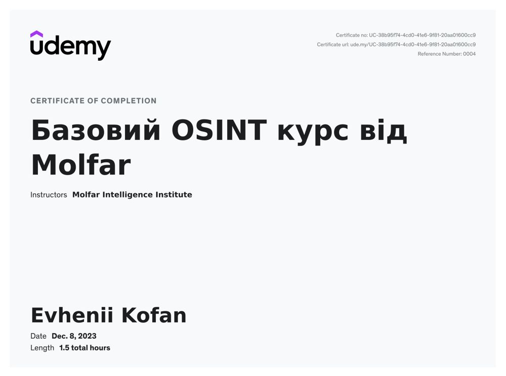
06 / Практика
Середовище для постійного навчання, тестів і прототипування.
Збірка FPV-дронів, прошивка, налаштування та діагностика.
Powerbanks, battery packs, тестування Li-Ion та spot welding.
Arduino, ESP32, STM32, Raspberry Pi, Orange Pi інтерфейси та прототипи.
Proxmox, Linux-інфраструктура, Telegram bots, backup та домашня сонячна електростанція.
07 / Навчання
08 / Освіта
Українська — рідна · Англійська — A2 · Російська — вільно
Контакт
Віддалена робота · ФОП · потрібне бронювання · довгострокові проєкти
Email ↗